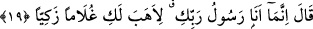
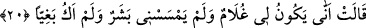

Meryem “dedi ki:” Ey genç! “Ben senden, çok esirgeyen Allâh’a sığınırım” Hz.
Meryem, burada Allah Teâlâ’ya sığınma ve ansızın karşısına çıkan bu şeyden korunmak
demek olan O’nun özel rahmetinin eserlerini celbetme konusunda mübâlağa için O’nu
Rahmân unvânıyla zikretmiştir.
el-Keşşâf ’ta şöyle der: “Meryem’in bu güzel sûretli delikanlıdan Allâh’a sığınması,
onun takvâsını ve iffetini göstermektedir.”
“Eğer (Allah’tan) korkuyorsan” Yani eğer Allah’tan korkuyor ve O’na sığınmayı
önemsiyorsan. Burada şart cümlesinin cevabı hazfedilmiştir. Çünkü cümlenin gelişi
zaten onu göstermektedir. Buna göre cümlenin tamamı şöyledir: Eğer sen Allah’tan
korkuyorsan ben muhakkak O’na sığınırım.
Kâşifî der ki: “Meryem (r.anhâ), Hz. Cebrâil’e: ‘Eğer sen takvâ ve verâ ehli isen ben
senden Cenab-ı Hakk’a sığınırım. Eğer sen de takvâ ve verâ ehli isen niçin O’na
sığınmazsın?’ demiştir.”
Şeyh, tefsirinde şöyle der: Hz. Meryem böyle söyledi; çünkü takvâ sâhibi kimse
Allâh’a sığınır ve O’ndan korkar. Fâsık (günahkâr) kimse ise güçten, otoriteden korkar.
Münâfık ise insanlardan korkar ve çekinir. et-Te’vîlâtü’n-Necmiyye’de de böyle
denilmiştir. Yani eğer sen dindar, Allah’tan korkan, Rahmân’ı tanıyan bir kimse isen ben
Allâh’a sığındığım için bana yaklaşma! Ama eğer sen azgın ve Rahman’ı tanımayan bir
kimse isen senden dolayı o zaman insanlara sığınıyorum. Bunun üzerine ruh/melek ona
şöyle dedi:
19. (Ruh): “Ben, sadece Rabb’inin elçisiyim: Sana tertemiz bir erkek çocuğu
hediye edeyim diye (geldim)” dedi.
“Ben” senin vehmettiğin kötülükler kendisinden beklenen bir kimse değilim,
“sadece” kendisine sığındığın “Rabb’inin elçisiyim.” Elbisene üfleyerek “Sana”
günahlardan ve insan nefsinin zulmetinin pisliklerinden temizlenmiş “tertemiz bir erkek
çocuğu hediye edeyim” verilmesine sebep olayım “diye geldim.”
20. “Meryem: “Bana bir insan eli değmediği, iffetsiz de olmadığım halde benim
nasıl çocuğum olabilir?” dedi.”
“Meryem:” Allâh’ın kudreti bakımından değil de normal âdet bakımından bu işe şaştı
ve açıkça bunu uzak bir ihtimal olarak değerlendirdi ve: “Bana bir insan eli